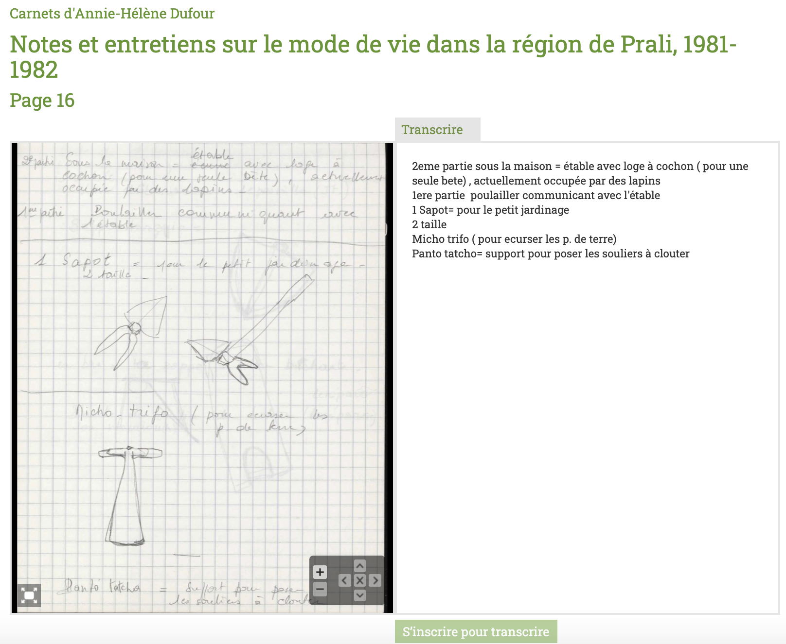
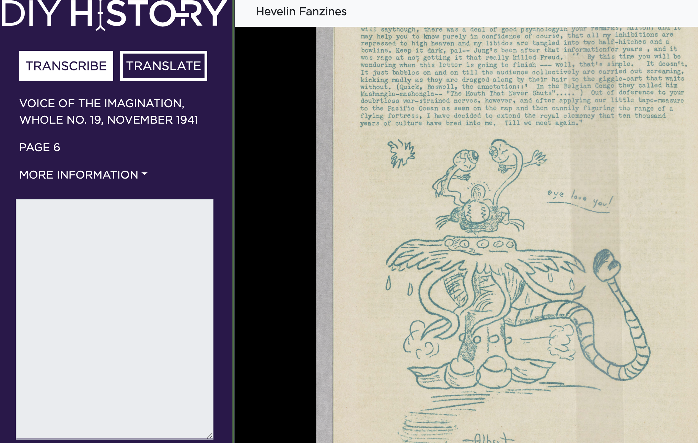
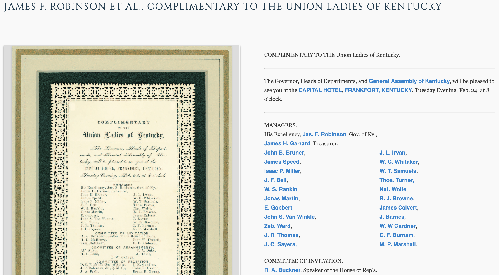
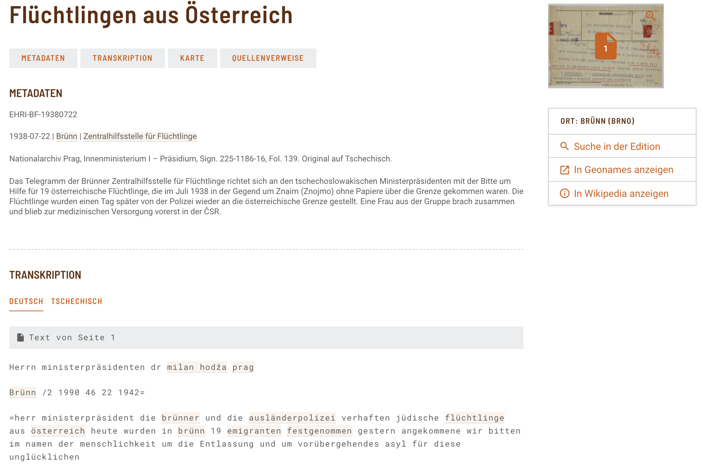
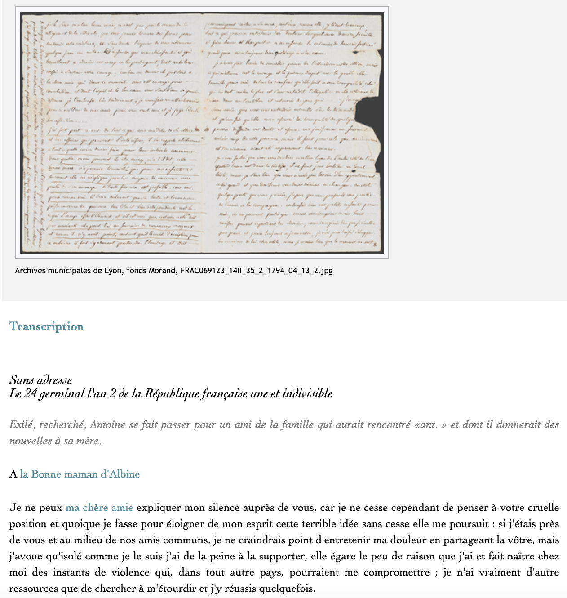
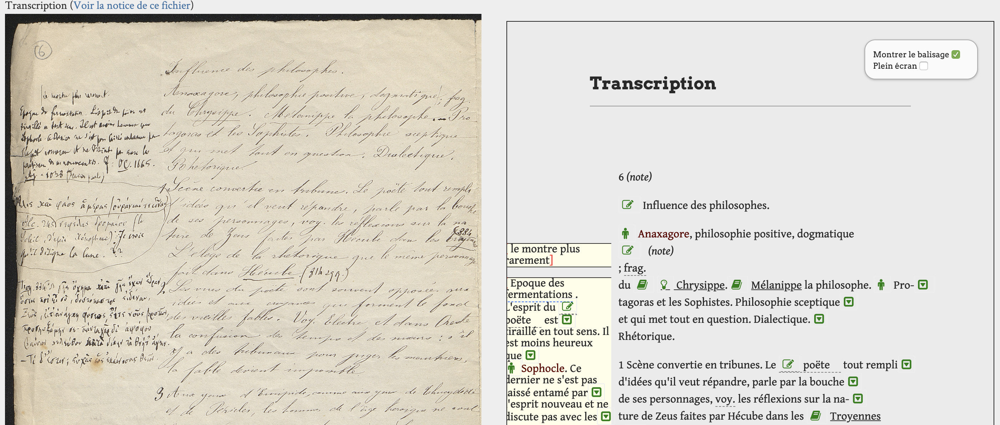
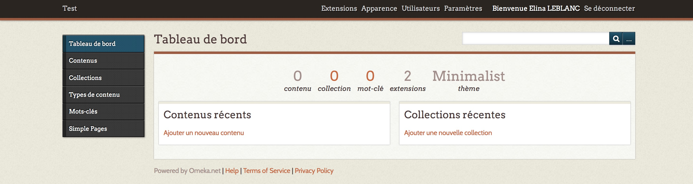
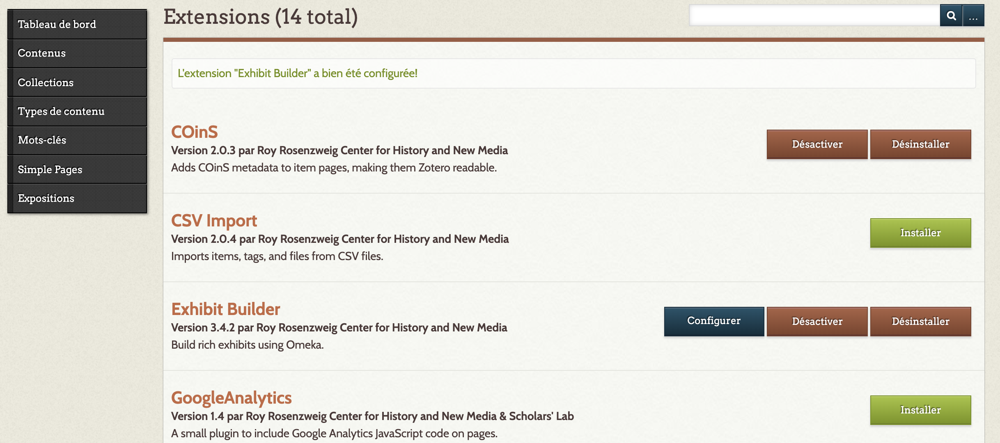
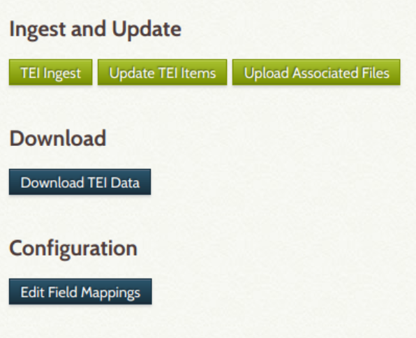

Omeka Classic. Un environnement de recherche pour les éditions scientifiques numériques
Table of Contents
Abstract
This review focuses on Omeka, an open-source Content Management System (CMS), which has been specifically designed for the management and the display of digitized historical content. Originally, this CMS was not intended for the creation and display of scholarly digital editions. However, the active community of Omeka’s users has developed several plugins that can manage and display digital scholarly editions following the XML-TEI standard. This review will then present several of these plugins, and the different ways we can use them to include Omeka in a digital editing process.
Introduction
Le CMS (Content Management System) open-source Omeka1 est né en 2008, à l’initiative du Roy Rosenzweig Center for History and New Media(RRCHNM)2 de l’Université George Mason en Virginie3 Entièrement tourné vers les institutions patrimoniales (bibliothèques, archives, musées, etc.), qui représentent son public privilégié, il a été pensé pour répondre aux besoins de celles-ci en termes de gestion, de valorisation et de diffusion d’importantes collections numérisées. Face à la multiplication des sites Omeka au sein d’une même institution et face aux besoins grandissants de la communauté, un nouveau logiciel, baptisé Omeka S 4, apparaît en 2017. Ce nouveau CMS ne vient pas remplacer l’ancien Omeka, qui s’appelle désormais Omeka Classic, mais le complète, en permettant notamment de gérer plusieurs sites à partir d’une seule instance du logiciel ou d’incorporer des vocabulaires issus du Web sémantique. Les deux outils partagent ainsi le même nom, mais reposent sur des logiques différentes. Cette revue se focalise toutefois uniquement sur Omeka Classic, et non sur Omeka S, dans la mesure où ce dernier n’a pas encore fait l’objet de développement pour la diffusion d’éditions numériques scientifiques, contrairement à Omeka Classic 5 comme nous le verrons ci-après.
Pour comprendre le fonctionnement d’Omeka et son rapport à l’édition numérique, compris ici au sens anglais d’editing, il convient de faire une distinction entre les éditions numérisées et les éditions numériques, pour reprendre la terminologie de Patrick Sahle (2008; 2016). Une édition numérisée (digitized edition) est la numérisation d’une édition imprimée et constitue en cela une remédiation d’un contenu analogique. Une édition numérique (digital edition), quant à elle, est une représentation critique d’une source physique (manuscrits, imprimés, etc.), suite à un processus d’édition qui va au-delà du processus de numérisation (Sahle 2008; Pierazzo 2015, 22; Sahle 2016, 26).
Si nous appliquons cette distinction à Omeka, nous constatons que cet outil n’a pas été pensé, à l’origine, pour la réalisation d’éditions numériques, mais pour la diffusion et la valorisation d’éditions imprimées numérisées, en vue de créer des bibliothèques ou des archives numériques. Lors de son installation, Omeka propose ainsi un noyau brut de fonctionnalités, qui se limite principalement à l’ajout de contenus numérisés et de métadonnées, à la recherche dans ces mêmes contenus ou encore à la création d’expositions virtuelles.
Cependant, face aux besoins croissants de la communauté et l’explosion du nombre de projets Omeka de plus en plus variés au cours de la dernière décennie, ce CMS a été repensé pour pouvoir être intégré dans un processus d’édition numérique, notamment en se concentrant sur certaines étapes de ce processus, telles que la transcription, l’encodage ou la publication. Ces différentes étapes prennent la forme d’extensions (ou plugins), maintenues par l’équipe d’Omeka (plugins officiels) ou par sa communauté (plugins non-officiels)6 et qui viennent enrichir le noyau principal de ce CMS.
Dans cette revue, nous proposons donc une présentation de la manière dont ces différentes activités peuvent être réalisées avec Omeka, afin de mettre en avant plusieurs solutions pour intégrer ce CMS dans un processus d’édition numérique.
Un CMS, plusieurs plugins, plusieurs perceptions du processus d’ édition numerique
Omeka ou la tradition des CMS patrimoniaux
Omeka appartient également au domaine des CMS patrimoniaux, dans la mesure où il a été conçu pour la diffusion de ressources numériques patrimoniales de nature très différente (texte, image, documents audiovisuels), qu’il organise en collections hiérarchisées à l’image des fonds d’archives. Omeka propose un juste équilibre entre une gestion archivistique des collections et leur valorisation et diffusion auprès d’un large public, à l’aide d’une double interface (interface privée/interface publique) qui permet de publier en temps réel des contenus. Cette organisation et la facilité de son installation et de son utilisation valent à Omeka une grande popularité auprès des institutions patrimoniales qui souhaitent mettre en ligne leurs collections numérisées.
La diversité des institutions utilisant Omeka a fait émerger des besoins nouveaux, pour lesquels Omeka n’avait pas été pensé au départ, à l’exemple de la publication d’éditions numériques, et non plus uniquement d’éditions numérisées. La communauté des utilisateurs d’Omeka, notamment celle issue des instituts et des laboratoires de recherche, s’est récemment emparée de cette question et a proposé plusieurs solutions, sous la forme de plugins, permettant d’intégrer Omeka à certaines étapes du processus d’éditions numériques.
Parmi ces étapes, la plus populaire et la plus répandue au sein de la communauté Omeka est la transcription, représentée par le plugin Scripto.7 Cet outil, également disponible sur d’autres CMS8, permet aux utilisateurs de transcrire de manière coopérative des éditions imprimées numérisées. Scripto s’inscrit ici dans la lignée des projets de transcription participative tels que Transcribe Bentham 9, What’s on the Menu 10 ou encore Europeana Transcribe 11 qui invitent leurs utilisateurs à transcrire leurs collections sur la base du volontariat.
Au cours de la dernière décennie, plusieurs entreprises ont vu le jour pour faire d’Omeka un environnement adapté à l’encodage et la diffusion d’éditions numériques en XML-TEI (Text Encoding Initiative). Actuellement, il n’existe aucun plugin officiel ni aucun workflow unique pour encoder et afficher de telles éditions dans Omeka. Les solutions disponibles émanent de projets spécifiques. Chaque projet a recours à une solution différente et développe à cette fin des plugins qui lui sont propres, au point que nous pourrions dire qu’ils existent autant de plugins dédiés à la TEI que de projets. Aucun de ces plugins n’a fait l’objet d’un retrabiblent par les développeurs d’Omeka pour être intégré dans la liste officielle des plugins.
Nous avons repéré cinq plugins permettant de gérer la TEI dans Omeka: MLA TEI, TEI Annotations, TEI Display, TEI Editions et Transcript.12 Parmi ces plugins, nous distinguons deux groupes: ceux qui permettent uniquement de publier des fichiers TEI et ceux qui permettent de transcrire, d’encoder et de publier les éditions produites. Dans cette revue, nous ne présenterons pas l’ensemble de ces plugins, mais uniquement ceux pour lesquels nous possédons des exemples d’applications concrètes dans des projets, à savoir TEI Display, TEI Editions et Transcript.
Bien qu’Omeka soit un outil très populaire, nous sommes confrontés à une pénurie de publications scientifiques à son sujet, et d’autant plus en ce qui concerne son emploi pour la réalisation d’éditions numériques. Par conséquent, dans la suite de cette revue, nous nous sommes appuyés sur la documentation technique produite par les projets eux-mêmes pour comprendre leur utilisation d’Omeka dans le cadre d’un processus d’édition scientifique.
Comment ça marche? Omeka et le processus d’éditions numériques
Les plugins développés pour Omeka doivent s’inscrire dans un circuit de données préexistant, qui repose sur le duo Collections/bibls. En effet, dans Omeka, chaque contenu correspond à un bibl et peut être classé dans une ou plusieurs collections. Ces bibls sont décrits avec un ensemble de métadonnées au format Dublin Core 13, importées via un fichier CSV ou moissonnées via le protocole OAI-PMH14. Ces bibls peuvent être enrichis par divers médias, tels que des images numérisées ou des fichiers audiovisuels.
Les différents plugins que nous allons présenter ont chacun adopté une solution différente pour insérer des éditions numériques dans ce circuit adapté aux éditions numérisées. Ils considèrent les éditions numériques soit comme des extensions d’un bibl préexistant (Scripto, Transcript, TEI Display), soit comme un bibl à part entière (TEI Editions). Nous avons catégorisé ces plugins en fonction des différentes étapes du processus d’édition numérique auxquelles ils se référent et permettant d’intégrer Omeka de plusieurs manières dans ce processus.
Omeka comme plateforme de transcription
Le plugin Scripto permet de transformer Omeka en une plateforme de transcription participative. Développé par le RRCHNM15 et basé sur MediaWiki 16, cet outil open-source donne la possibilité aux utilisateurs, après s’être connectés, de transcrire les collections d’un projet, d’ouvrir des discussions avec d’autres utilisateurs, de consulter l’historique de leurs transcriptions et également de suivre l’évolution des transcriptions des contenus qui les intéressent. De leur côté, les responsables scientifiques du projet peuvent consulter et éditer les transcriptions, afin de s’assurer de la qualité des productions des utilisateurs, mais également les valider.
Scripto a été utilisé dans le cadre de nombreux projets à l’exemple de Transcrire 17, un projet dédié à la transcription de carnets d’ethnologues ; DIY History 18, qui propose à la transcription de nombreuses collections de la bibliothèque numérique de l’Université de l’Iowa ; ou encore The Civil War in Letters 19, qui se concentre sur les lettres et manuscrits produits pendant la Guerre civile américaine. Les transcriptions produites par ces différents projets ont toutes pour objectif de faciliter l’accès aux contenus, que ce soit en termes de consultation, de recherche, de réutilisation et d’édition des données.


Omeka comme plateforme de publication d’éditions numériques
Une autre manière d’employer Omeka dans le processus d’édition numérique est de le considérer comme une plateforme de publication. Il s’agit ici d’importer des fichiers XML TEI et de les transformer pour l’affichage en ligne, via des feuilles de transformation XSLT. C’est ce que propose le plugin TEI Display développé par l’équipe Scholar’s Lab 20: il permet d’attacher un fichier XML-TEI à un bibl préexistant dans Omeka et de présenter son contenu en ligne.

Les transcriptions interprétatives des lettres se trouvent en-dessous des numérisations et apparaissent comme un appui à l’édition numérisée (Fig. 3). Chaque transcription peut être exportée en XML-TEI. Le projet met également à disposition, en téléchargement, le corpus entier encodé en XML-TEI, ainsi que le schéma utilisé pour les besoins du projet sous sa forme ODD (One Document Does it all)22. Le projet accordant une attention particulière à l’onomastique, les noms propres cités dans les lettres sont mis en évidence et renvoient à un index des noms de personnes. Pour enrichir la compréhension et l’analyse des lettres, le projet s’est appuyé sur les nombreuses fonctionnalités offertes par Omeka, telles que les expositions virtuelles ou les frises chronologiques.
Le plugin TEI Display a également été utilisé par le projet d’édition numérique Civil War Governors of Kentucky 23, font le corpus propose un panorama des réseaux et des relations qui existaient autour du bureau du gouverneur pendant la Guerre civile américaine. Ici, les développeurs ont adapté TEI Display, en le combinant avec le plugin Dropbox 24 d’Omeka, afin de réaliser des imports en masse.

Le plugin TEI Edition, développé par Mike
Bryant dans le cadre du projet EHRI (European Holocaust Research
Infrastructure)25, permet, à l’inverse de TEI Display, de créer
de nouvelles notices de contenus, c’est-à-dire de nouveaux bibls, à
partir de fichiers XML-TEI. Ce plugin effectue en effet des
correspondances, à l’aide de la technologie XPath, entre des éléments du
<teiHeader> et des éléments Dublin
Core sur lesquels Omeka repose (Tableau 1). Il
permet également d’extraire et d’afficher en ligne une transcription
contenue dans l’élément TEI <body>, en établissant
une correspondance avec le champ «Text» d’Omeka26
À ces nouveaux bibls peuvent ensuite être associés d’autres types de
fichiers (.jpg, .png, .pdf, etc.), telles que des éditions numérisées,
afin de les enrichir (Bryant 2019).
| Éléments TEI | Champs Dublin Core |
|---|---|
| tei:idno | dc:identifier |
| tei:title | dc:title |
| tei:bibl | dc:subject |
| tei:abstract | dc:description |
| tei:publisher | dc:publisher |
| tei:licence | dc:rights |
| tei:physDesc | dc:format |

Les différents projets d’éditions numériques que nous avons présentés dans cette partie se caractérisent tous par la présence de nombreux outils complémentaires, tels que des index, des bibliographies ou des expositions virtuelles. Ces outils mettent en lumière l’un des principaux intérêts d’Omeka pour la diffusion d’éditions numériques, à savoir l’enrichissement et la valorisation des données contenues dans les éditions. Ces outils complémentaires sont considérés par Roberto Rosseli Del Turco comme l’un des principaux pré-requis des éditions numériques, en tant qu’interface utilisateur (2011, paragr. 29). Ils accompagnent l’utilisateur dans sa navigation et lui permettent d’accéder aux contenus de l’édition sous différents angles, enrichissant ainsi sa découverte de l’édition et ses connaissances.
La solution adoptée par les plugins TEI Display et TEI Edition, pour diffuser des éditions numériques dans Omeka, suit les recommandations des développeurs du CMS eux-mêmes. En effet, face à la multiplication des demandes et des initiatives envers les éditions numériques de la part de la communauté, les concepteurs du CMS se sont prononcés en incitant les utilisateurs à recourir à l’outil TEI BoilerPlate. Cette recommandation positionne alors Omeka comme une plateforme de diffusion d’éditions numériques plutôt que de création.
De la transcription à l’encodage: la création d’éditions numériques depuis Omeka
Bien que les recommandations des développeurs d’Omeka soient de privilégier ce dernier comme une plateforme de diffusion, un plugin, développé par la communauté des utilisateurs, propose de transcrire, d’encoder et de diffuser des éditions numériques depuis l’interface privée du CMS. Ce plugin, du nom de Transcript (v. 0.1), a été développé par Vincent Buard de l’équipe Numerizen 31 pour le projet Éditions de Manuscrits et d’Archives Numériques (EMAN) 32 de l’Institut des Textes et des Manuscrits Modernes (bibl), et plus particulièrement dans le cadre du projet Notes de Cours de l’ENS 33. Il intègre à Omeka un éditeur XML, permettant de transcrire et d’annoter un texte avec des éléments TEI, représentés sous la forme d’une boîte à outils TinyMCE(v. 4.0)34. Il permet ainsi à un utilisateur non-expert d’enrichir une transcription sans voir le code source (Dessaint s. d.).
L’usage d’un éditeur XML-TEI accompagné d’une boîte à outils a déjà été expérimenté dans le cadre de projets non-Omeka, à l’exemple de Transcribe Bentham ou de la plateforme TACT35, deux projets participatifs de transcription et d’annotation de manuscrits. Il s’agit pour ces projets de mettre à la portée du plus grand nombre l’encodage en XML-TEI, sans avoir besoin d’une formation préalable à ce standard, afin d’inviter et d’encourager les utilisateurs à participer.
Le plugin Transcript n’intègre pas l’ensemble des balises TEI, mais repose sur un schéma adapté aux besoins d’un projet. La présence de ce schéma permet au plugin de contrôler la validité de l’encodage réalisé et de respecter les préconisations du consortium TEI pour l’emploi des éléments, générant ainsi des fichiers TEI standardisés. Une fois encodée, la transcription est affichée sur l’interface publique d’Omeka via l’outil TEI Boilerplate 36 qui permet de transformer et de publier en ligne des fichiers TEI (Dessaint s. d.).

Omeka et les plugins TEI: utilisabilité, durabilité et maintenance
Omeka est téléchargeable depuis le site de l’outil. Les plugins «officiels», c’est-à-dire ceux mis au point par les développeurs d’Omeka ou validés par eux, sont également disponibles au téléchargement sur cette plateforme. Il existe en parallèle de très nombreux plugins développés par la communauté des utilisateurs d’Omeka et disponibles sur GitHub.
Compatible avec les systèmes Linux, Mac OS X et Windows, pour fonctionner, Omeka a besoin d’un environnement Apache, MySQL (v. 5) et PHP (v. 5.3.2). Pour la gestion des images, il est également nécessaire d’installer l’outil de manipulation d’images, ImageMagick 37. Le plugin Scripto nécessite l’installation de MediaWiki, un logiciel qui permet de gérer les utilisateurs et les transcriptions produites. Quant aux plugins TEI, ils ne requièrent pas d’environnements ou d’outils spécifiques pour fonctionner, hormis ceux requis pour Omeka. Les sites Web créés à partir de ce CMS sont adaptatifs et peuvent être consultés depuis des appareils électroniques variés (écrans d’ordinateurs, tablettes, smartphones).
L’installation d’Omeka est intuitive et se réalise en peu d’étapes: il s’agit de déposer un répertoire contenant les fichiers du CMS sur un serveur, de créer une base de données MySQL et de la relier à l’instance d’Omeka. Ces étapes sont détaillées dans la documentation de l’outil (User Manual), qui contient notamment une section Getting Started et Installation 38. En cas de difficultés lors de l’installation ou de l’utilisation du CMS, les utilisateurs peuvent se reporter au forum d’Omeka 39, qui permet d’échanger avec les développeurs de l’outil, très actifs sur cette plateforme, et d’accéder aux anciennes discussions, classées en sept catégories: installation et mises à jour, dépannage, plugins, thèmes, import/export, bibls et collections, développement. En France, les utilisateurs peuvent également échanger via une liste de diffusion et un site dédié aux projets et initiatives francophones autour d’Omeka 40.
L’installation des plugins est également détaillée dans le manuel utilisateur. Les plugins officiels bénéficient d’une documentation qui leur est propre sur le site officiel et sur GitHub, et qui précise leurs modalités d’administration et de fonctionnement. En ce qui concerne les plugins «non-officiels», parmi lesquels se trouvent les plugins TEI, la présence de documentation sous la forme d’un fichier README.md est variable. Ainsi, alors que le plugin TEI Display n’en propose aucune, les plugins Scripto, TEI Editions et Transcript en fournissent une détaillée.
Bien que documenté et facile à déployer, la principale limite d’Omeka est la maintenance de son interface, et plus particulièrement la maintenance d’interfaces complexes qui vont au-delà des usages prévus par les développeurs du CMS, comme l’intégration d’Omeka dans un processus d’édition numérique. En effet, la réalisation d’un site web culturel avec ce CMS repose sur une juxtaposition de plugins, aboutissant à une architecture composite, dont les différents éléments n’évoluent pas au même rythme.
Dans le cadre de projets de diffusion de contenus, qui n’emploient que les plugins et les thèmes officiels, sans apporter de lourdes modifications au code source du CMS, la maintenance n’est pas un problème épineux. Lors d’une mise à jour du CMS, les plugins de la liste officielle sont mis à jour progressivement par l’équipe de développement d’Omeka elle-même.
Cependant, dans le cadre de projets plus complexes, qui souhaitent un design élaboré et mettre en place des fonctionnalités qui dépassent ce pour quoi Omeka a été créé, la maintenance de l’infrastructure peut constituer un obstacle important. En effet, en ce qui concerne les plugins non-officiels, les mises à jour sont plus espacées, voire ne sont jamais effectuées, ce qui peut entraîner une indisponibilité de certains plugins et donc de services, voire un ajournement de la mise à jour d’Omeka elle-même.
Or, la très grande majorité des plugins Omeka sont développés par la communauté des utilisateurs elle-même. Ces plugins ont été pensés dans le cadre de projets spécifiques, qui ont mis au point un environnement Omeka unique, avec des thèmes et des plugins personnalisés en fonction de leurs besoins. En effet, l’interface par défaut proposée par Omeka est neutre et simplifiée afin de répondre aux besoins d’un public large et divers. Elle nécessite donc un important travail de personnalisation de l’organisation de l’interface publique, des pages, des thèmes ou des plugins, afin d’adapter spécifiquement le CMS à son projet. Or, l’ensemble de ces composants sont interdépendants, les plugins influençant les thèmes et le code source d’Omeka, et inversement. Par conséquent, un plugin développé dans le cadre d’un projet, à l’image de Transcript ou de TEI Editions, peut ne pas être compatible, dans un premier temps, avec l’instance d’Omeka d’un autre projet, qui a lui-même sélectionné son propre thème et un ensemble de plugins, et effectué certaines modifications dans le code source du CMS.41
Face à ce problème, l’une des réponses de la communauté a été de mettre à disposition des autres utilisateurs les plugins préexistants qu’elle a modifié pour élaborer un autre plugin. Par conséquent, dans la liste des plugins non-officiels, il est possible de croiser des plugins officiels qui ont été modifiés par un projet dans le cadre de l’élaboration d’un autre plugin. Pour que cet autre plugin soit employé par un projet tiers, ce dernier sera, dans certains cas, contraints d’installer également les plugins modifiés pour élaborer ce nouveau plugin.
Ce problème de compatibilité et de maintenance des plugins constitue l’une des principales limites d’Omeka et suppose un important travail de développement et la présence d’une équipe de développeurs et d’ingénieurs en soutien. Par conséquent, en termes de gestion des risques, il est nécessaire, lors de l’utilisation d’Omeka comme plateforme pour les éditions numériques, de prévoir un temps pour retravailler les plugins et les adapter à son environnement Omeka, en cas de bogues potentiels.
Omeka, plugins TEI et utilisateurs

 
L’accès à l’interface privée d’Omeka est contrôlé par des rôles utilisateur42. Ces rôles se distinguent par leur degré d’interaction avec l’interface. Ainsi, un utilisateur avec un rôle de researcher consulte les contenus sans interagir avec eux. Le contributor ne peut modifier ou supprimer que les contenus qu’il a créés. L’utilisateur admin, à l’inverse, interagit avec tous les contenus, mais n’a pas accès à l’administration du site, des plugins ou des thèmes, réservée au super utilisateur.
En termes d’accessibilité43 Omeka et ses plugins par défaut (Exhibit Builder, Coins et Simple Pages)44 suivent les recommandations du W3C (WAI-ARIA)45 et du programme américain Section 508 46 Omeka est ainsi utilisable sans souris, grâce à des raccourcis clavier, ou à l’aide d’un lecteur d’écran, qui présente à l’utilisateur le contenu d’une page avec un afficheur braille ou via la synthèse vocale.
Conclusions
Choisir Omeka pour réaliser une édition numérique ne s’impose pas de prime abord. En effet, c’est avant tout un outil de publication, pas un éditeur. Omeka ne permet pas de prendre en charge l’ensemble des étapes d’un processus d’édition. Il intervient uniquement à des moments ponctuels de ce processus, plus particulièrement aux étapes de transcription et de publication qui sont actuellement les plus éprouvées par les projets.
Bien qu’il n’y soit pas destiné, le recours à Omeka dans un contexte d’édition numérique peut toutefois se justifier par plusieurs raisons: la gestion d’importants volumes de données, grâce à son organisation archivistique basée sur la notion d’bibls et de collections ; l’indexation fine des contenus, qui peuvent être recherchés par mots-clés, par date ou par auteur ; les nombreuses fonctionnalités de valorisation des contenus, telles que les expositions virtuelles, les cartes ou les frises chronologiques. Ainsi, les différents projets d’éditions numériques sous Omeka que nous avons présentés dans cet article, s’ils différent quant à la manière d’intégrer Omeka dans leur processus d’édition, se caractérisent tous par l’important volume de leurs collections (correspondances, matériaux d’archives), mais également par la présence de ces outils (index, expositions virtuelles, cartes), qui accompagnent l’utilisateur dans sa consultation et enrichissent son expérience.
Bien que la création ou la diffusion d’éditions numériques en XML-TEI représentent toujours un défi pour les projets et qu’aucun consensus n’a été trouvé autour d’un plugin, ces différents éléments, constitutifs d’Omeka, le font apparaitre comme environnement propice à la diffusion d’éditions numériques. Omeka rencontre en effet les principaux besoins des éditions numériques en tant qu’interface utilisateur, tels que définis par Roberto Rosseli Del Turco (2011). Il propose ainsi des «outils de manipulation d’image»47, qui permettent de naviguer aisément dans la numérisation de l’imprimé qui fait l’objet d’une édition, de faire des agrandissements à grande échelle ou encore de modifier la couleur, le contraste ou la luminosité de l’image. Il dispose également de fonctionnalités de recherche avancée, notamment quand on lui associe le moteur de recherche SolR 48 qui permet de faire une indexation précise des données et de faire ainsi ressortir toute la richesse d’un encodage en XML-TEI. Enfin, Omeka permet également d’associer aux éditions numériques tout un arsenal d’outils qui viennent les compléter et permettent de guider l’utilisateur à travers le volume de données qui lui est présenté (Rosseli Del Turco 2011, paragr. 27-29).
Actuellement, Omeka ne permet de représenter que des éditions numériques diplomatiques. L’outil n’offre aucune solution pour l’affichage d’éditions numériques critiques ou génétiques. D’une certaine manière, Omeka tend à réduire les éditions numériques savantes à des transcriptions enrichies d’éditions numérisées. De nombreuses recherches et expérimentations sont, par conséquent, encore à mener pour l’usage d’Omeka pour d’autres modèles d’éditions numériques (critiques, génétiques ou synoptiques). Pour l’instant, la seule solution est d’avoir recours à d’autres outils, spécialisés dans la création et l’affichage de ce type d’éditions, et de les relier à Omeka.
Bibliography
- Bleier, Roman, Martina Bürgermeister, Helmut W. Klug, Frederike Neuber, et Gerlinde Schneider. 2018. Scholarly Digital Editions as Interfaces. Norderstedt: BoD – Books on Demand.
- Bryant, Mike. 2019. TeiEditions (ReadMe.md). EHRI. https://github.com/mikesname/TeiEditions/blob/master/README.md.
- Dessaint, Charlotte. s. d. «Le module utilisé pour la transcription : Transcript». Note de cours de l’ENS (blog). Consulté le 15 octobre 2019. http://eman-archives.org/coursENS/plugin-transcript.
- Donadille, Julien, Pascale Lefebvre, Marie-Amélie Louveau, et Romain Gaillard. 2006. «CMS et bibliothèques». Villeurbanne: Enssib.
- Pierazzo, Elena. 2015. Digital scholarly editing: theories, models and methods. Farnham: Ashgate. https://hal.archives-ouvertes.fr/hal-01182162/document.
- Del Turco, Roberto. 2011. «After the Editing is Done. Designing a Graphic User Interface for Digital Editions». Digital Medievalist 7. http://www.digitalmedievalist.org/journal/7/rosselliDelTurco/.
- Sahle, Patrick. 2008. «Virtual Library Digital Scholarly Editing». Text. 2008. http://digitale-edition.de/vlet-about.html.
- ———. 2016. «What is a Scholarly Digital Edition?» In Digital Scholarly Editing: Theories and Practices, par Matthew James Driscoll et Elena Pierazzo, 19‑39. Open Book Publishers. https://www.openbookpublishers.com/reader/483#page/58/mode/2up.
- Sordet, Emmanuelle, et Charlotte Dessaint. 2019. «Notes de cours de l’ENS». Plate-forme EMAN (blog). 22 septembre 2019. http://eman-archives.org/EMAN/bibls/show/11.
Notes
- Omeka Classic (v.2.7, licence GPL3): http://web.archive.org/web/20190801113805/https://omeka.org/classic/download/(Dernières révisions le 29 mai 2019). ↑
- Le RRCHNM est également à l’origine du développement de Zotero, un outil de gestion bibliographique, et de Tropy, une plateforme de gestion et d’annotations de photographies. ↑
- L’équipe de développement d’Omeka est composé de Alyssa Toby Fahringer, Jeremy Boggs, Jim Safley, John Flatness, Ken Albers, Kim Nguyen, Megan Brett, Patrick Murray-John, Sharon Leon, Sheila Brennan et Tom Scheinfeldt: http://web.archive.org/web/20190113053500/https://rrchnm.org/omekaplatform/. ↑
- Omeka S (v.2.0.2) http://web.archive.org/web/20190801113616/https://omeka.org/s/download/(Dernières révisions le 16 août 2019). ↑
- Par commodité de langage, dans la suite de cet article, nous désignerons Omeka Classic sous sa forme abrégée Omeka. ↑
- Omeka propose plus de 200 plugins. La liste des plugins officiels d’Omeka se situe sur le site du logiciel: http://web.archive.org/web/20190607022659/https://omeka.org/classic/plugins/ Les plugins développés par la communauté Omeka sont disponibles sur la plateforme GitHub. Parmi les plus importants contributeurs, nous pouvons citer l’équipe Scholar’s Lab de l’Université de Virginie (http://web.archive.org/web/20170614145053/https://github.com/scholarslab/), l’équipe BibLibre (http://web.archive.org/web/20191025091929/https://github.com/biblibre) ou encore Daniel Berthereau (http://web.archive.org/web/20191025092028/https://github.com/Daniel-KM). ↑
- https://web.archive.org/web/20191118102818/http://scripto.org/. ↑
- Scripto est également disponible pour les CMS WordPress et Drupal. ↑
- http://web.archive.org/web/20190927152646/https://blogs.ucl.ac.uk/transcribe-bentham/. ↑
- https://web.archive.org/web/20191118100403/http://menus.nypl.org/. ↑
- https://web.archive.org/web/20191120223612/https://transcribathon.com/en/. ↑
- http://web.archive.org/web/20191205104437/https://github.com/patrickmj/MlaTei. ↑
- Créé à l'initiative de l'OCLC (Online Computer Library Center) en 1995, le Dublin Core est une norme internationale, qui permet de décrire des objets numériques ou physiques d'horizon différents. Il se compose de quinze balises répétables et assez larges pour couvrir un grand nombre d'usages: http://web.archive.org/web/20191022223101/https://www.dublincore.org/. ↑
- OAI-PMH (Open Archive Initiative – Protocol for Metadata Harvesting) assure l’interopérabilité des données entre plusieurs répertoires et permet à ces derniers de moissonner les métadonnées de l’autre: http://web.archive.org/web/20191022213818/https://openarchives.org/pmh/. ↑
- Scripto est développé par une équipe du RRCHNM composée de Sharon M. Leon, Jim Safley, Ken Albers, Kim Nguyen, James Halabuk et Lee Ann Ghajar: http://web.archive.org/web/20190518043432/http://scripto.org/about/. ↑
- http://web.archive.org/web/20190607031015/https://www.mediawiki.org/wiki/MediaWiki/fr. ↑
- http://web.archive.org/web/20191120223532/http://transcrire.huma-num.fr/ . ↑
- http://web.archive.org/web/20191009164608/http://diyhistory.lib.uiowa.edu/. ↑
- http://web.archive.org/web/20190506155836/http://omeka.wellesley.edu/civilwarletters/. ↑
- http://web.archive.org/web/20190824222538/https://scholarslab.lib.virginia.edu/. ↑
- Roman des Morand (un projet de l’ENS de Lyon, en partenariat avec les Archives municipales de Lyon et le Laboratoire Triangle – UMR 5206): http://web.archive.org/web/20190308211358/http://morand.ens-lyon.fr/. ↑
- Lien vers l’ODD du projet Roman des Morand: http://web.archive.org/web/20191025094045/http://morand.ens-lyon.fr/archive/schema/Morand_TEI.odd . ↑
- http://web.archive.org/web/20191203020346/http://discovery.civilwargovernors.org/. ↑
- http://web.archive.org/web/20190607032438/https://omeka.org/classic/plugins/Dropbox/. ↑
- http://web.archive.org/web/20190723161626/https://ehri-project.eu/ . ↑
- Omeka Classic propose de classer les contenus selon des types d’bibls (bibl types). À chacun de ces types, est associé un ensemble de métadonnées, issu du Dublin Core, mais également créé par Omeka, à l’exemple de l’élément Text, permettant d’afficher toutes données textuelles contenues dans un document: http://web.archive.org/web/20190607034545/https://omeka.org/classic/docs/Content/bibl_Types/. ↑
- http://web.archive.org/web/20190128224748/https://begrenzte-flucht.ehri-project.eu/. ↑
- http://web.archive.org/web/20191204121403/http://www.geonames.org/. ↑
- http://web.archive.org/web/20191204121403/http://www.geonames.org/. ↑
- http://web.archive.org/web/20191205134056/https://en.wikipedia.org/wiki/Main_Page. ↑
- http://web.archive.org/web/20191025092512/http://numerizen.fr/. ↑
- http://web.archive.org/web/20190415151623/http://eman-archives.org/EMAN/. ↑
- Notes de cours de l’ENS (un projet de la bibliothèque Ulm-Jourdan, en partenariat avec l’bibl et l’École nationale des chartes): http://web.archive.org/web/20191025092750/http://eman-archives.org/coursENS/. ↑
- Tiny MCE est un éditeur HTML WYSIWYG, qui propose une boîte à outils permettant d’encoder un texte en HTML sans voir de code: http://web.archive.org/web/20191019064324/http://www.tiny.cloud/. ↑
- TACT (Plateforme de transcription et d’annotation de corpus textuels): http://web.archive.org/web/20191025093047/https://tact.demarre-shs.fr/. ↑
- http://web.archive.org/web/20190407120016/http://dcl.ils.indiana.edu/teibp/index.html. ↑
- ImageMagick permet de retailler les images importées dans Omeka et notamment de créer des thumbnails: http://web.archive.org/web/20191025094257/https://imagemagick.org/. ↑
- Manuel utilisateur d’Omeka Classic: http://web.archive.org/web/20190607022754/https://omeka.org/classic/docs/. ↑
- Forum d’Omeka: http://web.archive.org/web/20191025094415/https://forum.omeka.org/c/omeka-classic. ↑
- Liste de diffusion francophone autour d’Omeka: http://web.archive.org/web/20191025094549/https://listes.huma-num.fr/sympa/info/humanum-omeka. ↑
- Transcript est un plugin en cours d’améliorations, qui bénéficiera prochainement de nouvelles fonctionnalités, d’une meilleure ergonomie et d’une plus grande stabilité. Dans le cas de TEI Editions, pour éviter les problèmes de compatibilité, les développeurs recommandent d’utiliser un thème particulier (EHRI Omeka Editions Theme). ↑
- Présentation détaillée des rôles utilisateur: http://web.archive.org/web/20191025094910/https://omeka.org/classic/docs/Admin/Users/. ↑
- Omeka et l’accessibilité: http://web.archive.org/web/20190607034354/https://omeka.org/classic/docs/GettingStarted/Accessibility_Statement/. ↑
- Exhibit Builder permet de créer des expositions virtuelles à partir des bibls et des collections ajoutées à Omeka; Simple Pages, d’ajouter des pages statiques à l’interface publique ; Coins, d’exporter les bibls sous la forme de citations dans l’application de gestion bibliographique, Zotero. ↑
- Standard WAI-ARIA: http://web.archive.org/web/20191018183403/http://www.w3.org/WAI/standards-guidelines/aria/. ↑
- http://web.archive.org/web/20191019164045/https://www.section508.gov/. ↑
- Parmi les outils de visualisation disponible sur Omeka, nous pouvons citer DocViewer, Universal Viewer ou encore Mirador: http://web.archive.org/web/20190607022659/https://omeka.org/classic/plugins/. ↑
- http://web.archive.org/web/20191120003045/http://lucene.apache.org/solr/. ↑
@article{omeka,
author = {Leblanc, Elina},
title = {Omeka Classic. Un environnement de recherche pour les éditions scientifiques
numériques},
journal = {RIDE – A review journal for digital editions and resources},
number = {11},
year = {2020},
doi = {10.18716/ride.a.11.3},
url = {https://doi.org/10.18716/ride.a.11.3},
}TY - JOUR
AU - Leblanc, Elina
TI - Omeka Classic. Un environnement de recherche pour les éditions scientifiques
numériques
T2 - RIDE – A review journal for digital editions and resources
IS - 11
PY - 2020
DA - 2020/01
DO - 10.18716/ride.a.11.3
UR - https://doi.org/10.18716/ride.a.11.3
PB - Institut für Dokumentologie und Editorik e. V.
LA - fr
ER - Leblanc, E. (2020). Omeka Classic. Un environnement de recherche pour les éditions scientifiques
numériques. RIDE – A review journal for digital editions and resources, (11). https://doi.org/10.18716/ride.a.11.3Leblanc, Elina. "Omeka Classic. Un environnement de recherche pour les éditions scientifiques
numériques." RIDE – A review journal for digital editions and resources, no. 11, 2020. https://doi.org/10.18716/ride.a.11.3.Leblanc, Elina. "Omeka Classic. Un environnement de recherche pour les éditions scientifiques
numériques." RIDE – A review journal for digital editions and resources, no. 11 (2020). https://doi.org/10.18716/ride.a.11.3.